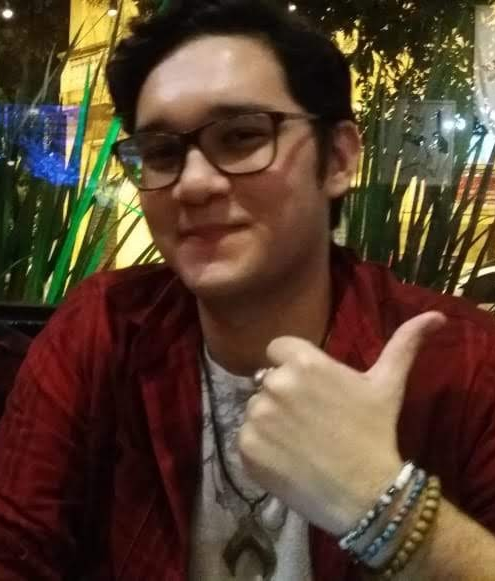

Bruno Farias
Sou animado, curioso, amigável, atencioso, impulsivo. Gosto de desenhar e pintar desde pequeno, já fiz até curso sobre (2 anos, terminei ano passado), entrei na faculdade mais por conta deste tema, também sou bem interessado nas outras áreas, já mexi um pouco com edição de vídeo, tinha feito até um semestre de uma faculdade de Design Gráfico, a matéria de web design me cativou bem mais do que eu esperava.
Bem, anteriormente já estive na faculdade, aliás ano passado, então tranquei, agora tô aqui de novo.